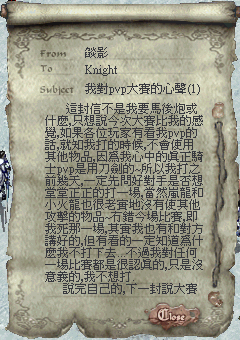
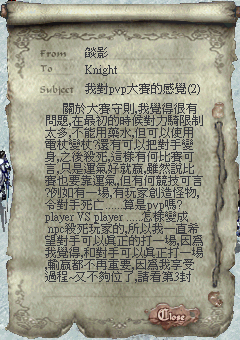
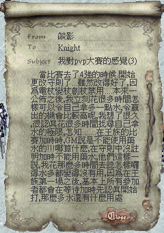
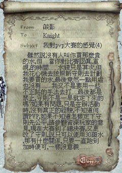
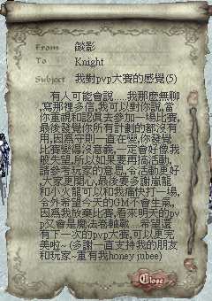
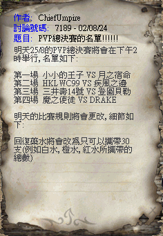
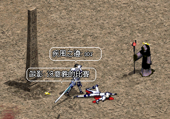

|
2002年8月24日
天堂職業制PvP大賽 - 參賽者燄影的話



相信很多有觀看PvP比賽的玩家和本網對於落敗者都有以下的感覺：雖敗猶榮。
天堂職業制PvP大賽規則一改再改

天堂職業制PvP大賽的裁判員ChiefUmpire在奇岩佈告欄這個非常"Formal"的地方非常"清楚"地公佈了比賽的名單及規則的新細節，本網相信ChiefUmpire在明天還會在大家都不知情的情況下加入部分沒有公佈的規則，在此唯有祝各參賽者好運。
注：天堂職業制PvP大賽仍是香港天堂官方所舉辦的官方活動，而考你眼光！誰是PvP王四連環競猜大賽則為本網所舉辦的非官方活動，假如你對天堂職業制PvP大賽有投訴的話我們建議閣下向香港天堂官方反映。
天堂職業制PvP大賽4強短評

今天香港太陽神伺服器進行了天堂職業制PvP大賽4強比賽，在比賽中不論觀看者或參賽者都發覺剛剛改變了規則極富爭議性，例如容許玩家使用藥水的規則導致首15分鐘的賽事都是兩個參賽者不停地互斬和爆水，亳無策略可言，可觀性極低，而容許玩家使用魔法卷軸的規則亦使大部分賽事都變為魔法表演，加上裁判員在比賽時加入了不少官方網站上沒有提及的規則，而在比賽事亦沒有事先詳細解釋給參賽者，令參賽者無所適從，更有參賽者因為不滿意裁判員的判決而杯葛比賽；除此以外由於場場賽時都加時，導致往後的比賽時大幅度地延遲，同時可能裁判員太趕時間的關係，部分比賽在倒數前沒有相消玩家，有的甚至在沒有倒數下，或有玩家未準備好的情況下便開始比賽。相信官方要好好反省一下自己的規則是否合乎PvP大賽的意義
- 公平的實力、策略與技術比試。
本網認為理想的PvP比賽理應禁止以下的道具或魔法：
同時最重要的是注意玩家的比賽態度，對於無心戀戰或是長時間逃走的玩家理應作出警告。
考你眼光！誰是PvP王四連環競猜大賽最後報告
此活動現在已經截止報名了，共有520名玩家參與：（參加了的玩家名單 及 所有玩家名單及選擇）
各PvP參賽者人氣指數：
| 王族 |
人氣指數 |
妖精 |
人氣指數 |
騎士 |
人氣指數 |
法師 |
人氣指數 |
| 1. PT1 |
5.4% |
5. 諸星 |
8.3% |
9. 燄影 |
14.2% |
13. 靈羊 |
15.8% |
| 2. 藍燄 |
47.7% |
6. 登圖貝勒 |
13.8% |
10. Tataka |
5.0% |
14. TheGod |
8.1% |
| 3. 月之宿命 |
46.5% |
7. Kissmehk |
7.5% |
11. 疾風之邊 |
74.4% |
15. Drake |
71.5% |
| 4. 小小的王子 |
0.4% |
8. 三井壽14號 |
70.4% |
12. HKlwc99 |
6.3% |
16. 魔之使徒 |
4.6% |
藍燄與月之宿命之爭究竟誰勝誰負？而其他的熱門可否眾望所歸，有得留低？大家記得留意今天14:15在奇岩格鬥場舉行的場事喔！
|